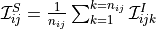
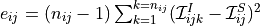

CleanLens
Under this identifier are defined some parameters to retrieve the shape of the source knowing a pixel-frame of the image.
Here the program reads CCD pixel-frame and using the equation of the lens compute a pixel-frame of the source. For each point of the Image plane the program can compute the corresponding point in the Source Plane. Then for each pixel with multiplicity n ij of the source plane we then can attribute an intensity computed as the mean of the intensity of corresponding image pixels:

The error of this reconstruction is given at position ij in the source plane by:

(the error estimate exists only if we have multiple images).
When using the [[Runmode#inverse-int1-float1-float2|inverse]] mode, the program will minimize the estimate of the error (e = Σ e ij). This ring circle method, nevertheless numerically different, was first described by [[“Kochaneck et al. 1989”:http://adsabs.harvard.edu/abs/1989MNRAS.238…43K]].
h2. List of parameters
h3. cleanset int float
If int = 0, nothing is performed.
If int = 1 then the program will compute from the image pixel-frame [[CleanLens#imframe-int-filename|imframe]] the corresponding source frame [[CleanLens#sframe-filename|sframe]] at redshift float.
If int = 2 then the program will compute from the image pixel-frame [[CleanLens#imframe-int-filename|imframe]] the corresponding source frame [[CleanLens#sframe-filename|sframe]] at redshift float, and will fit the parameters of a [[ShapeModel|source shape model]] to this image in the source plane.
If the [[Runmode#inverse-int1-float1-float2|inverse]] mode is selected, an optimization of the ring cycle form will be done. In this case the optimization will work only if multiples images or giant arcs are present in the image pixel-frame. It is strongly advise the user to have an a priori good guess on the mass model parameters.
Moreover it will create the pixel-frame: - erreur.fits : this frame is relevant only in the case of giant or multiple arcs, it computes the reconstruction error of the source pixel-frame for each pixels.
imult.fits : this pixel-frame shows the multiplicity of each pixel of the reconstructed source pixel-frame.
h3. c_image filename
If int = 1 for the cleanset keyword, filename is an ASCII file that contains a list of points in the format (i, x i, y i) in the image plane given in arcsecs relative to the [[RunMode#reference-int-RA-DEC|image reference points]] that defines the center of the observed image. The barycenter of those points is sent to the source plane and defines the source center. This value is used to compute the WCS keywords of the resulting source FITS file.
h3. imframe int filename
int specifies the format of the input image ( int = 2 for ipx format, int = 3 for FITS file).
filename is the name of the CCD frame where (multiple) gravitational images are present.
h3. psfframe int filename
int specifies the format of the input Point Spread Function (PSF)( int = 2 for ipx format, int = 3 for FITS file).
filename is the name of the PSF frame, namely a Star Profile. The Star must be at the center of the frame. And the total intensity of the frame (sum of all the pixels) must be equal to 1 (PSF normalized). Note: the psf frame is used when using a deconvolve-inversion of the lensed images.
h3. sframe filename
filename is the name of the output source frame. This frame will correspond to the inversion of the [[CleanLens#imframe-int-filename|imframe]] frame (from Image Plane to Source Plane). It is written with the FITS format.
h3. wframe int filename
int specifies the format of the input image ( int = 2 for ipx format, int = 3 for FITS file).
filename is the name of the weight frame. This image is required to perform the optimisation.
h3. ncont int filename
int is the number of contours.
filename is the name of the output frame: that is the CCD frame where only the pixels inside the contours (closed lines) have been kept. The idea is to limit the area of the frame, and keep only the interesting pixels.
h3. contour int filename
Defines contours in the image plane of one or several images of the source you want the shape in the source plane.
int is the index of the contour for one image. First contour must be index by 1, second by 2, etc.
filename is the name of the contour ASCII file for one image that contains a list of points (i, x i, y i) in the image plane given in arcsec relative to the [[RunMode#reference-int-RA-DEC|image reference points]].
h3. subsamp int
It is possible to subsample the CCD frame to calculate with greater accuracy the source frame in the source plane.
int is the subsampling parameter. Default is 1. If int = 2 it will cut each pixel in 4 smaller pixels. Default value : 2.
h3. s_subsamp int
It is possible to subsample the frame in the source plane as you can do in the image plane with the [[CleanLens#subsamp-int|subsamp]] keyword. If int is too high, you can get an image with undefined pixel values. Default value : 1.
h3. s_n int
Defines the width and height of the resulting source image in pixels. Default value : 50 pixels.
h3. s_xmin float
Defines the left (East) limit of the source plane image in relative arc seconds. Default value : -20 arcsec. This value is overwritten if a polygon in the image plane is provided with the [[CleanLens#c_image|c_image]] keyword in the [[CleanLens|cleanlens]] section.
h3. s_xmax float
Defines the right (West) limit of the source plane image in relative arc seconds. Default value : 20 arcsec. This value is overwritten if a polygon in the image plane is provided with the [[CleanLens#c_image|c_image]] keyword in the [[CleanLens|cleanlens]] section.
h3. s_ymin float
Defines the bottom (South) limit of the source plane image in relative arc seconds. Default value : -20 arcsec. This value is overwritten if a polygon in the image plane is provided with the [[CleanLens#c_image|c_image]] keyword in the [[CleanLens|cleanlens]] section.
h3. s_ymax float
Defines the upper (North) limit of the source plane image in relative arc seconds. Default value : 20 arcsec. This value is overwritten if a polygon in the image plane is provided with the [[CleanLens#c_image|c_image]] keyword in the [[CleanLens|cleanlens]] section.
h2. Secondary parameters
The following parameters should be set only if the int argument of the [[CleanLens#imframe-int-filename|imframe]] keyword is 0 (ascii format) or 1 (ipx format without scaling). It is strongly advised to used the ipx format: 2 or FITS format: 3, to avoid to define these parameters.
h3. pixel float
Sets size of the pixel in x and y in arcseconds.
h3. column int
Column to be selected (in a multi-column ascii pixel-frame file).
h3. header int
Number of lines to skip before the real beginning of the data.
h3. pixelx float
Pixel size in x in arcseconds (if the pixel is not a square).
h3. pixely float
Pixel size in y in arcseconds (if the pixel is not a square).
h3. xmin float
x position of the bottom-left pixel (expressed in pixel units).
h3. ymin float
y position of the bottom-left pixel (expressed in pixel units).